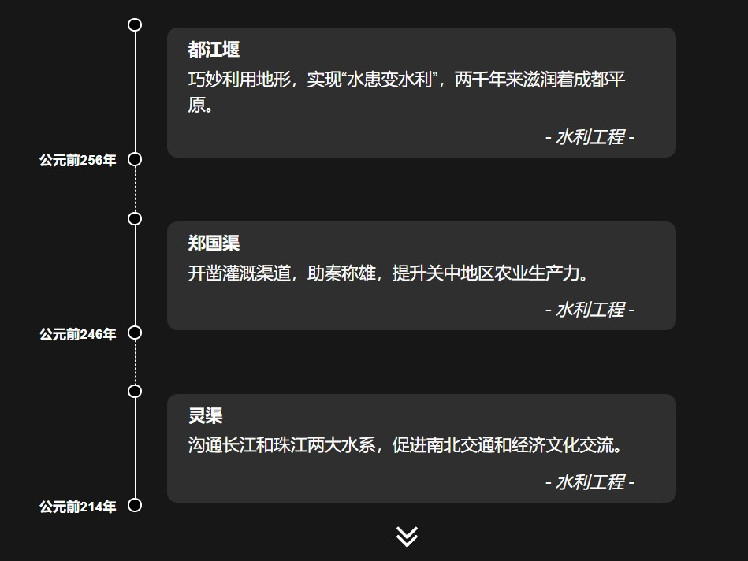

5000+
文明历史（年）
loading
传承五千年文明，延续科技智慧
中国古代科技发展历经数千年，从春秋战国到明清时期，众多科学家在天文、数学、医学等领域取得了卓越成就。他们的智慧结晶至今仍在造福人类。
中华文明五千年，科技发展生生不息。从四大发明到天文历法，从数学算经到医药典籍，古人探索自然规律，创造了灿烂的科技文明，为世界科技发展做出了重要贡献。
张衡发明地动仪，祖冲之推算圆周率，李时珍著《本草纲目》，沈括著《梦溪笔谈》，李冰父子造都江堰，这些杰出的科学家用毕生精力推动着中国古代科技的发展。
文明历史（年）
历代学者（人）
重要典籍（部）
重大发明（项）
工程技术

中国古代水利工程技术成就辉煌。都江堰水利工程巧妙利用地形，实现"水患变水利"，两千年来滋润着成都平原；郑国渠开凿助秦称雄，灵渠沟通南北水系。这些水利工程奇迹不仅展现了中华民族的智慧，更为世界文明进步作出了重要贡献。
探索详情